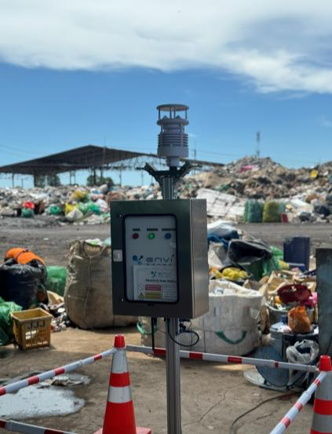

E-NOSE STATION
ระดับกลิ่นที่ลดลง
ในช่วงฉีดพ่น
ช่วงที่ 1 · 16.05–17.30 น.
25→13–15OU
ช่วงที่ 2 · 17.40–20.05 น.
27→9–11OU
ผลเฉพาะช่วงฉีดพ่น วันที่ 27 ก.พ. 2569
ไม่ใช่ค่าเฉลี่ยทั้งวันหรือผลรับประกันทุกพื้นที่
 LINE สอบถาม / สั่งซื้อ
LINE สอบถาม / สั่งซื้อ
THAIX EMZ · ENVIRONMENTAL CARE
ดูแลกลิ่นและของเสีย
ด้วยเทคโนโลยีเอนไซม์ชีวภาพ
ลดกลิ่น
เพื่อสิ่งแวดล้อมที่ดีขึ้น
OUR PRODUCTS
เลือกสูตรให้เหมาะกับพื้นที่ของคุณ ตั้งแต่ฟาร์มและชุมชน
ไปจนถึงระบบบำบัดน้ำเสียและห้องน้ำ
PRODUCT SPOTLIGHT / 02
AGROZYME AP-LANDFILL
เอนไซม์สำหรับดับกลิ่นขยะ

FIELD OBSERVATIONE-NOSE STATION
25→13–15OU
27→9–11OU
ผลเฉพาะช่วงฉีดพ่น วันที่ 27 ก.พ. 2569
ไม่ใช่ค่าเฉลี่ยทั้งวันหรือผลรับประกันทุกพื้นที่
CONTINUOUS SITE CARE
วางแผนฉีดพ่นให้สอดคล้องกับขยะใหม่
และกิจกรรมในแต่ละจุดของพื้นที่
รายงานระบุว่าประสิทธิภาพลดลงเมื่อมีขยะใหม่เข้ามาเติม และไม่สามารถคงผลลดกลิ่นไว้ได้ ผลข้างต้นจึงใช้แสดงการเปลี่ยนแปลงเฉพาะช่วงฉีดพ่นในการทดสอบครั้งนี้
ค่าเฉลี่ยช่วงไม่มีการใช้ 26–27 ก.พ. เท่ากับ 11.80 OU และช่วงวันที่มีการใช้หลัง 16.00 น. 27–28 ก.พ. เท่ากับ 13.60 OU ตัวเลขเฉพาะช่วงฉีดพ่นไม่แสดงว่าค่าเฉลี่ยรวมทั้งวันลดลง
รายงานใช้คำว่า “น้ำยากำจัดกลิ่นรบกวน” และไม่ได้ระบุชื่อสูตรผลิตภัณฑ์ จึงยังไม่ยืนยันว่าผลนี้เป็นของ AGROZYME AP-LANDFILL โดยตรง
ข้อมูลกรณีศึกษาจากรายงาน EnviSense ซึ่งไม่ได้ระบุชื่อสูตรผลิตภัณฑ์ จึงยังไม่ยืนยันผลของ AGROZYME AP-LANDFILL โดยตรง
A PLAN FOR EVERY SITE
จากจุดรับขยะ สู่พื้นที่คัดแยก
ดูแลกลิ่นให้สอดคล้องกับการทำงานจริง
THAIX EMZ / LANDFILL CARE
เอนไซม์สำหรับดับกลิ่นขยะ
ดูแลกลิ่นไม่พึงประสงค์จากขยะเก่าและขยะใหม่ สำหรับหลุมฝังกลบ ศูนย์กำจัดขยะ และพื้นที่รวบรวมขยะ
NET WT. 1 กิโลกรัมOUR APPLICATIONS
กดเลือกพื้นที่เพื่อดูสูตรที่เกี่ยวข้อง